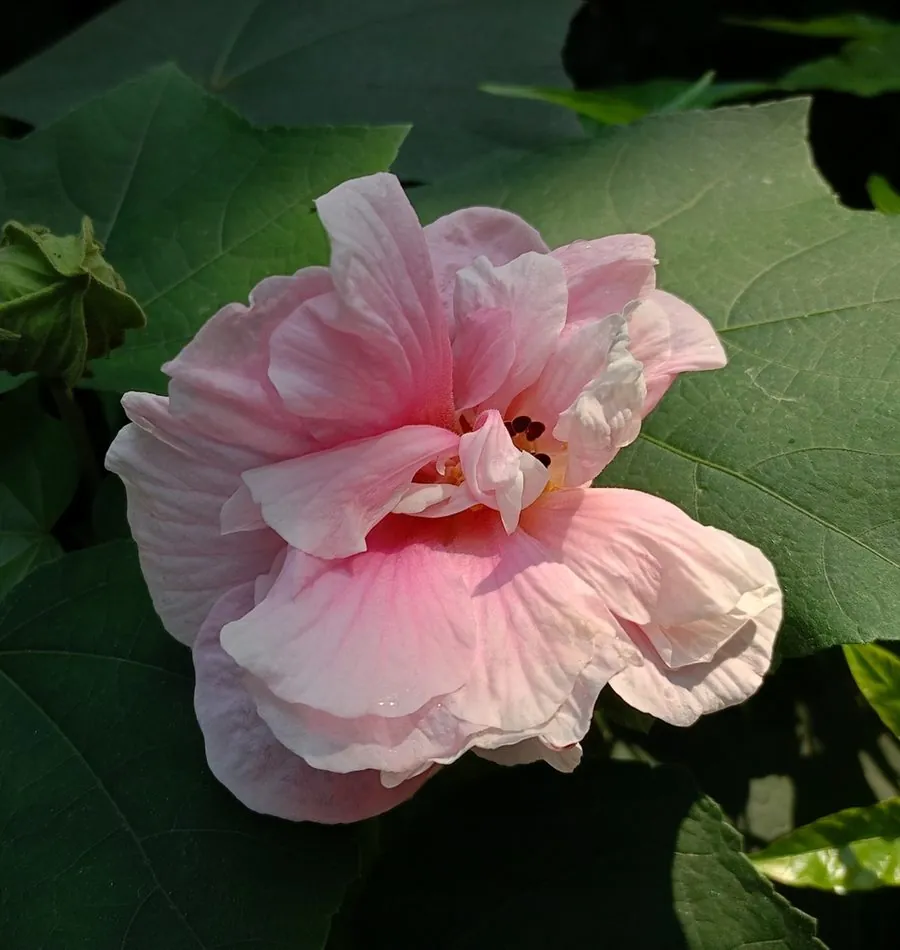

灌木与花木 · 植物界
木芙蓉 Hibiscus mutabilis

中国传统的秋季观花灌木，花朵大而美丽，花色一日三变，晨白午粉暮红，故有“三醉芙蓉”“拒霜花”之称。
- 分类
- 门被子植物门纲木兰纲目锦葵目科锦葵科属木槿属
- 栖息环境
- 海拔 1000 米以下的平原、河岸与庭院，喜光喜温暖湿润，耐水湿
- 地理分布
- 中国湖南、四川等地原产，长江流域以南广泛栽培
- 保护级别
- 暂无评估；中国未列入国家重点保护野生植物名录
物种志
木芙蓉为落叶灌木或小乔木，高可达 5 m，枝条密被星状毛；叶片宽卵形至圆卵形，常 3–5 裂，边缘具钝齿，两面被毛。花期 8–10 月，花单生于枝端叶腋，花径 8–12 cm，花瓣 5 枚或重瓣，初开白色或淡粉色，渐变为深红色，一日之内花色数变；蒴果扁球形，成熟时开裂，种子肾形。
木芙蓉原产中国湖南、四川等地，中国长江流域以南广泛栽培，喜光、喜温暖湿润，耐水湿，适宜深厚肥沃、排水良好的土壤。秋季开花，花期长、花大色艳，是南方庭院与公园常见的观花灌木；花、叶与根皮可入药，有清热解毒、消肿之效；茎皮纤维可制绳、造纸。木芙蓉在湖南被广泛种植，湖南因此有“芙蓉国”之称，成都也以芙蓉为市花，故成都又称“蓉城”。
形态与习性
- 株高可达 5 m，枝条密被星状毛
- 花期8–10 月，花色一日数变
- 果期10–11 月，蒴果扁球形
- 光照喜光，不耐长期荫蔽
- 水分喜湿润，耐水湿
- 土壤深厚肥沃、排水良好的土壤
- 主要用途庭院观赏、花叶根皮入药、茎皮纤维制绳造纸
趣味知识
- 木芙蓉的花初开白色，午后转粉、傍晚变红，一日三变，故称“三醉芙蓉”。
- 木芙蓉因深秋开花、不畏霜寒，又被称为“拒霜花”。
- 湖南因遍植木芙蓉而有“芙蓉国”之称，成都则以芙蓉为市花。
- 木芙蓉的花、叶与根皮均可入药，有清热解毒、消肿的功效。